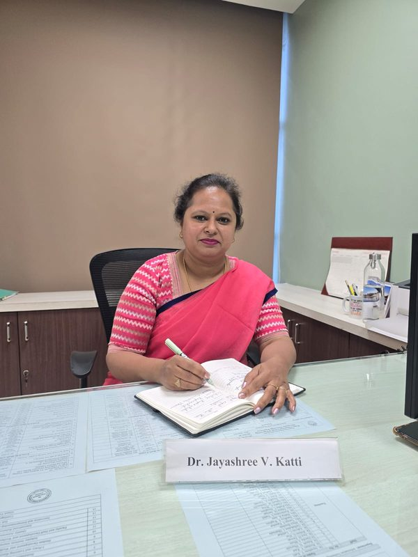

Department of Information Technology
The Information Technology course at Pimpri Chinchwad College of Engineering was started in the academic year 2001-02 with an intake of 60 students. Its purpose was, and still is, to develop high-quality IT professionals through quality education and dedicated faculty.
The department has well-established, state-of-the-art computer laboratories and classrooms with modern teaching aids and computing facilities. Competent faculty and dedicated staff focus on both the technical and the personal development of every student.
Learning is delivered through an outcome-based curriculum under the institute's autonomous status and is enriched by co-curricular and extra-curricular activities, professional student chapters and close collaboration with industry.
Key Facts
- Established
- 2001-02
- DTE Code
- 6175
- Affiliation
- Savitribai Phule Pune University
- Status
- Autonomous Institute
- Accreditation
- NBA, NAAC 'A' Grade
- Certification
- ISO 21001:2018
- Approval
- AICTE
Modern Labs
State-of-the-art computer laboratories with current software and hardware.
Outcome-Based Learning
An autonomous curriculum designed around clear program outcomes.
Industry Connect
Internships and collaboration with companies such as Persistent, IBM and CDAC.
Social Impact
Projects aligned with the UN Sustainable Development Goals.
From HOD's Desk

JKDr. Jayashree V. Katti
Professor & Head
Ph.D. (Comp), M.E. (CSE), B.E. (CSE)
The goal of education is the advancement of knowledge.
The vision of the Department of Information Technology is to prepare IT professionals who can compete globally. To achieve this, the department places strong emphasis on the quality of teaching, on research and on innovation.
Our qualified and experienced faculty, supported by modern facilities, guide students well beyond the classroom. Co-curricular and extra-curricular activities and professional student chapters help every student grow as a confident engineer and a responsible individual.
Close collaboration with industry prepares our students for fast-moving fields such as augmented and virtual reality, deep learning, the Internet of Things and cloud computing, while our projects contribute to the Sustainable Development Goals.
Read on the current department siteVision & Mission
Vision
To be a front-runner in the western region in preparing Information Technology engineers with academic excellence and research skills, empowering them to contribute to technology and society.
Mission
To equip students with the skills and knowledge through a dynamic learning environment.
To collaborate with industries to nurture proficient Information Technology engineers.
To cultivate a spirit of research, innovation and entrepreneurship to address community and business challenges.
To imbibe work ethics and leadership skills through co-curricular and extracurricular activities.
Programs & Intake
| Level | Program | Year Started | Duration | Intake |
|---|---|---|---|---|
| UG | B.Tech in Information Technology | 2001 | 4 Years | 120 (60 until 2019) |
| PG | M.Tech in Artificial Intelligence & Data Science | 2022 | 2 Years | 18 |
| PG | M.E. / M.Tech in Information Technology (replaced by M.Tech AI & DS) | 2014-15 | 2 Years | 24 |
Department Milestones
2001-02
The Information Technology undergraduate course begins with an intake of 60 students.
2014-15
Postgraduate programme in Information Technology (M.E. IT) starts.
2019
Undergraduate intake doubles from 60 to 120 students.
2020
PCCOE's IEEE Student Branch receives the Emerging Branch Award.
2022-23
Under autonomy, the M.Tech in Artificial Intelligence & Data Science is launched with a new curriculum.
2023-24
M.Tech AI & DS reaches its full intake of 18 students.
2026-27
The M.Tech curriculum moves to the new Regulation 2026 syllabus.
Academic Coordinators
Dr. Rajesh N. Phursule
Overall Academic Coordinator
Mrs. Radha Deoghare
B.Tech Coordinator
Mrs. Mukta Jamage
TY Coordinator
Mrs. Sapana Kolambe
SY Coordinator
Faculty Strength
Full-time faculty members
Faculty with a Ph.D.
Adjunct faculty from Persistent Systems
Faculty research areas include artificial intelligence, machine and deep learning, data science, cryptography and information security, blockchain, IoT, computer vision, NLP, cloud computing, DevOps, AR/VR and quantum computing.
View All Faculty ProfilesProgram Outcomes
The NBA Program Outcomes (POs) describe what every engineering graduate is able to do. Click a group to open it.
- PO1 Engineering knowledge: Apply mathematics, science, engineering fundamentals and an engineering specialisation to solve complex engineering problems.
- PO2 Problem analysis: Identify, formulate, review research literature and analyse complex engineering problems to reach substantiated conclusions.
- PO3 Design / development of solutions: Design solutions and system components that meet specified needs with due consideration for public health, safety, culture, society and the environment.
- PO4 Investigation of complex problems: Use research-based knowledge and methods, including design of experiments, analysis and interpretation of data, to provide valid conclusions.
- PO5 Modern tool usage: Create, select and apply appropriate techniques, resources and modern engineering and IT tools, understanding their limitations.
- PO6 The engineer and society: Assess societal, health, safety, legal and cultural issues and the responsibilities relevant to professional engineering practice.
- PO7 Environment and sustainability: Understand the impact of engineering solutions in societal and environmental contexts, and the need for sustainable development.
- PO8 Ethics: Apply ethical principles and commit to professional ethics, responsibilities and norms of engineering practice.
- PO9 Individual and team work: Function effectively as an individual, and as a member or leader in diverse teams and multidisciplinary settings.
- PO10 Communication: Communicate effectively with the engineering community and society, including reports, documentation, presentations and instructions.
- PO11 Project management and finance: Apply engineering and management principles to manage projects as a member and leader in a team.
- PO12 Life-long learning: Recognise the need for, and have the ability to engage in, independent and life-long learning in the context of technological change.